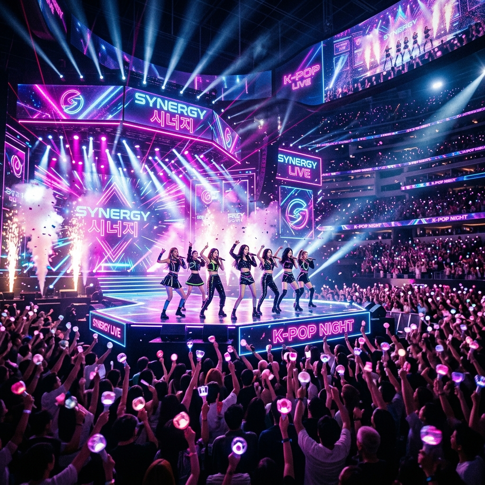
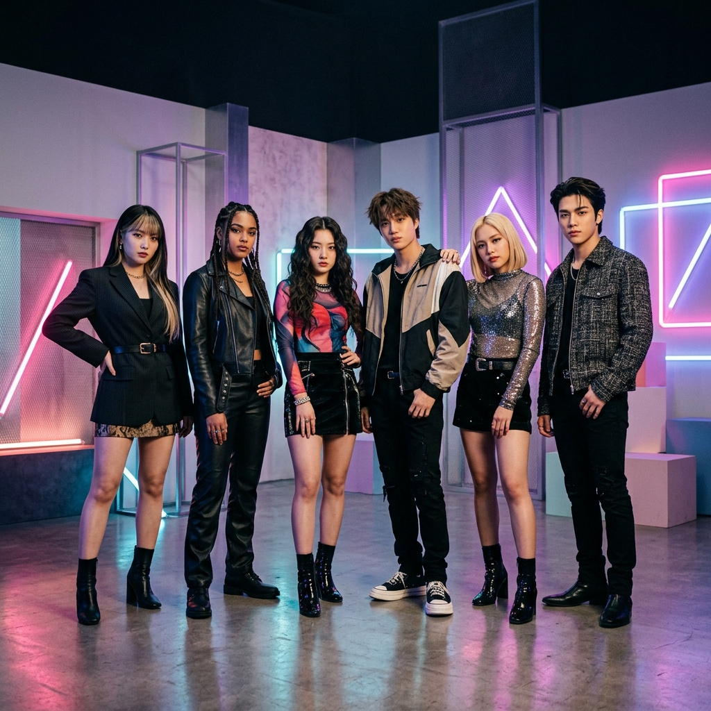
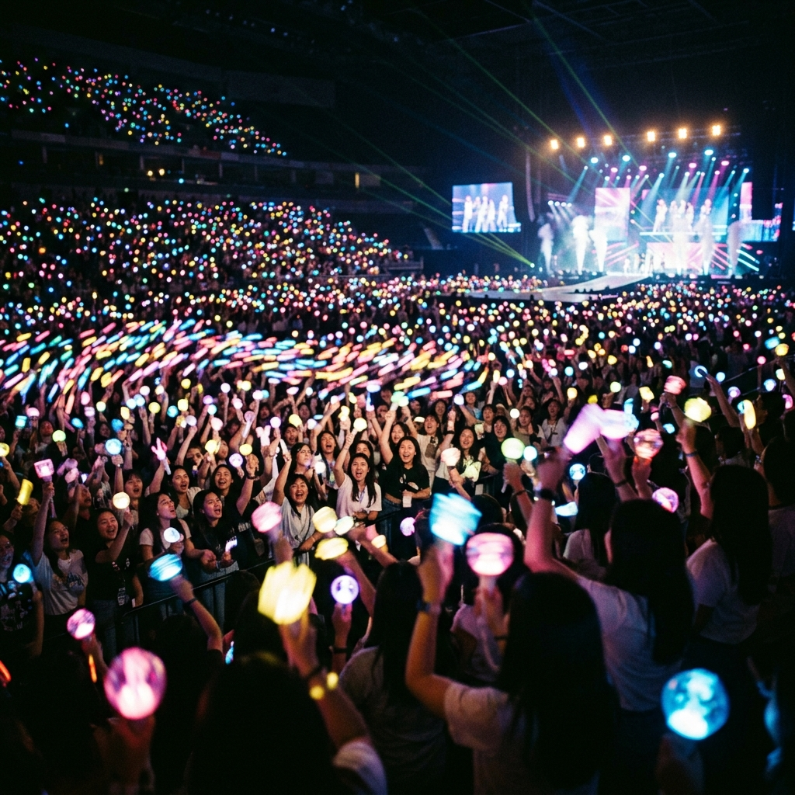

Experience the cultural shift that redefined global music. From Seoul to the world, K-POP is more than music—it's a revolution.

K-POP은 단순히 한국의 대중음악을 넘어, 체계적인 기획과 트레이닝, 그리고 화려한 퍼포먼스가 결합된 하나의 장르이자 문화적 현상입니다.
특히 '연습생 제도(Trainee System)'는 K-POP만의 독창적인 성공 비결입니다. 기획사가 인재를 발굴하여 수년간 보컬, 댄스, 언어, 인성을 아우르는 종합 교육을 거친 후 완벽한 상태로 데뷔시키는 시스템입니다.
서태지와 아이들 이후, K-POP은 네 번의 큰 혁명을 거치며 성장해왔습니다.
H.O.T, S.E.S, 핑클 등 아이돌 그룹 모델이 정립되고 거대 팬덤 문화가 탄생했습니다.
동방신기, 빅뱅, 소녀시대 등이 등장하며 일본과 아시아 전역에 한류 열풍이 시작되었습니다.
BTS, 블랙핑크, 엑소 등이 SNS와 유튜브를 통해 북미와 유럽 주류 시장을 정복했습니다.
뉴진스, 아이브, 에스파 등 처음부터 글로벌 시장을 목표로 한 고도화된 컨셉이 특징입니다.
K-POP의 가장 큰 자산은 팬덤입니다. 단순한 소비자를 넘어 아티스트와 함께 메시지를 확산하고, 사회적 영향력을 발휘하는 거대한 커뮤니티로 성장했습니다. 응원봉의 물결은 우리 모두가 하나임을 증명합니다.
